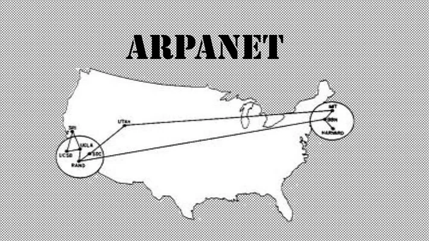
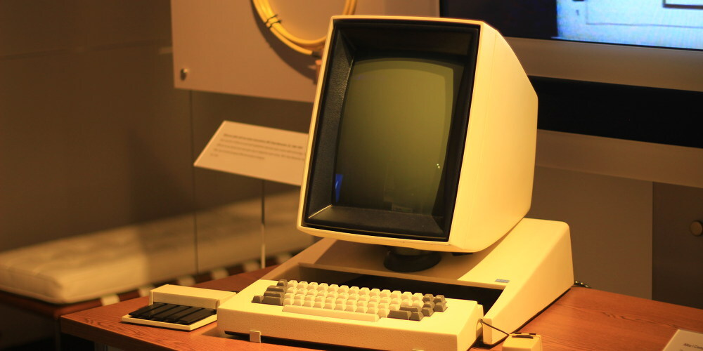

160. Milicia E.U.A.
Se crea ARPANET exclusivamente de uso militar, con el objetivo de un ataque ruso, se pudiera tener acceso a la información militardesde cualquier punto del país.
1968. Doug Engelbart
Primera demostración pública del ratón, incluyó una conexión en pantalla con su centro de investigación, es decir, fue la primer vídeo-conferencia de la historia

1973. Xerox PARC
Xerox Alto fue el primer ordenador personal, así como el primero que utilizó la metáfora de escritorio y una interfaz gráfica de usuario
1793. DARPA
Crean nuevos protocolos de comunicaciones que permiten el intercambio de información para las computadoras conectadas, surge Internet.